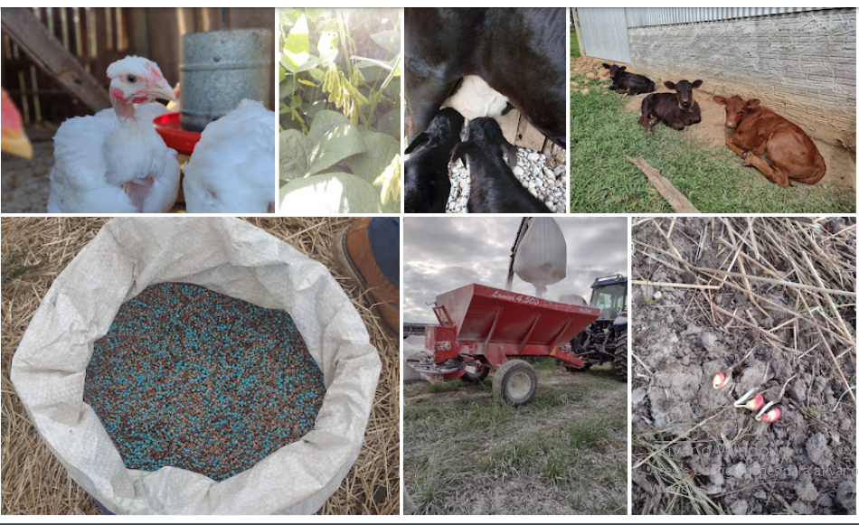

Tanto o campo quanto a cidade possuem suas responsabilidades ambientais e se relaciobam para conseguir um melhor desempenho.
A relação entre os dois está se tornando importante para buscarmos uma sociedade mais sustentável e que se preocupe com o meio ambiente.
Nos ultimos anos, principalmente, está se buscando formas mais sutentáveis seja para produzir alimentos, se buscando soluções sustentáveis para substituir as energias não renováveis e que causam maiores poluições aatmosféricas, gerar menos residuos entre outras diversas preocupações com o clima e o planeta.
A cidade está buscando gerar menos quantidade de residuoS, substituir algumas energias, por energias mais limpas.
O campo está buscando novas práticas agrícolas mais apropriadas para produzir os alimentos que gerem menores impactos ambientais e buscando produzir maiores quantidades de alimentos e de qualidade.
No entanto, tanto o campo quanto a cidade, não caminham sozinhos, a cidade vem ajudando de diversas formas o campo, com pesquisas e novas praticas agricolas que buscam o melhor desempenho e menores impactos ambientais. E por outro lado, o campo também ajuda a cidade, com matérias primas para a produção de algumas energias renováveis.
Cidade:
Campo: